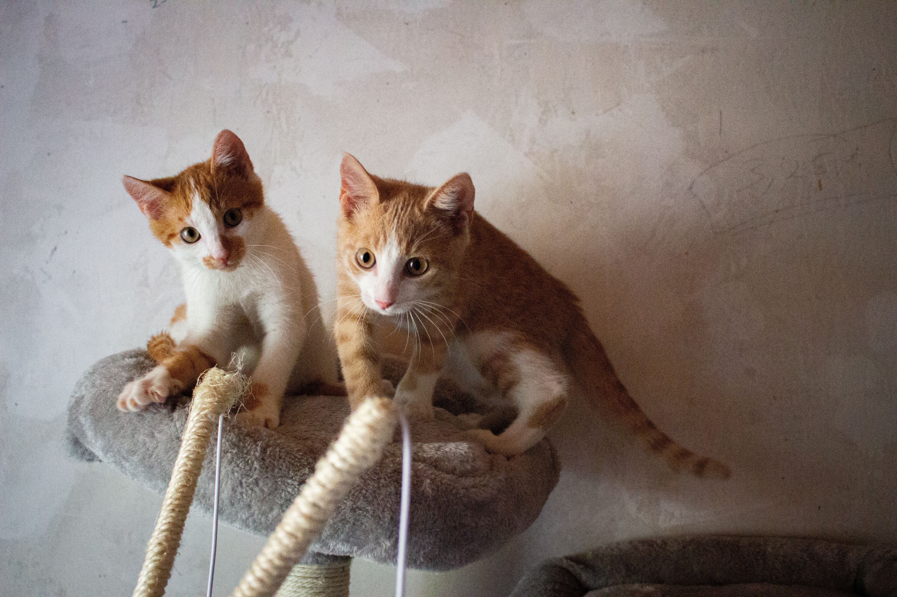
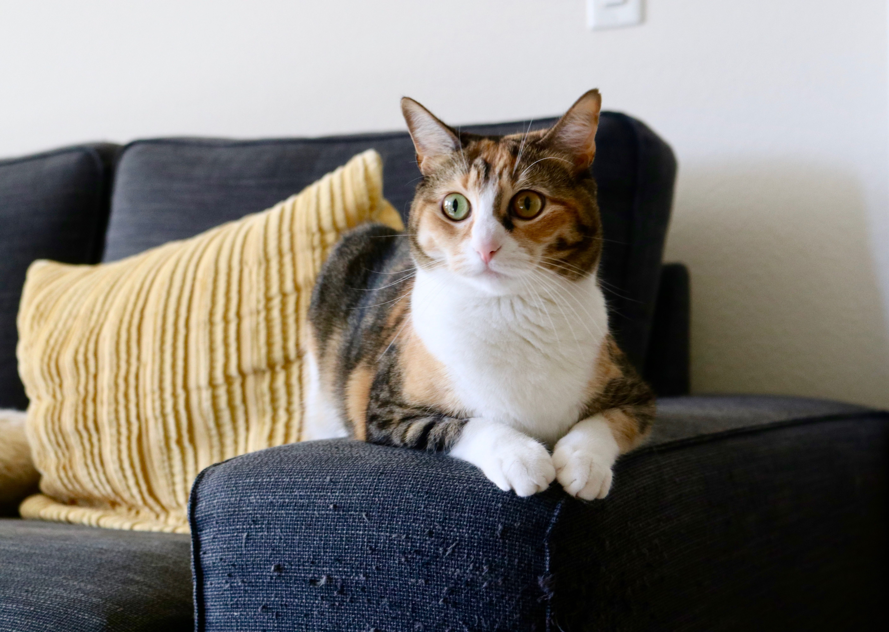

Bolo de cenoura com cobertura de chocolate
Publicada em , por Dona Lúcia.

O bolo que toda avó sabe fazer, fofinho e com a cobertura que endurece por fora.
Ingredientes:
Para a massa:
- 3 cenouras médias
- 4 ovos
- 1 xícara de óleo
- 2 xícaras de açúcar
- 2 xícaras de farinha de trigo
- 1 colher de sopa de fermento
Para a cobertura:
- 4 colheres de sopa de chocolate em pó
- 1 colher de sopa de manteiga
- 3 colheres de sopa de leite
- 1 xícara de açúcar
Modo de preparo:
- Bata no liquidificador as cenouras, os ovos e o óleo.
- Numa tigela, misture o creme com o açúcar e a farinha, e por último o fermento.
- Asse em forno médio, preaquecido, por cerca de 40 minutos. Não abra o forno nos primeiros 30 minutos.
- Para a cobertura, leve todos os ingredientes ao fogo, mexendo até engrossar.

O ponto certo: a calda escorre devagar da colher. - Espalhe a cobertura sobre o bolo ainda quente.